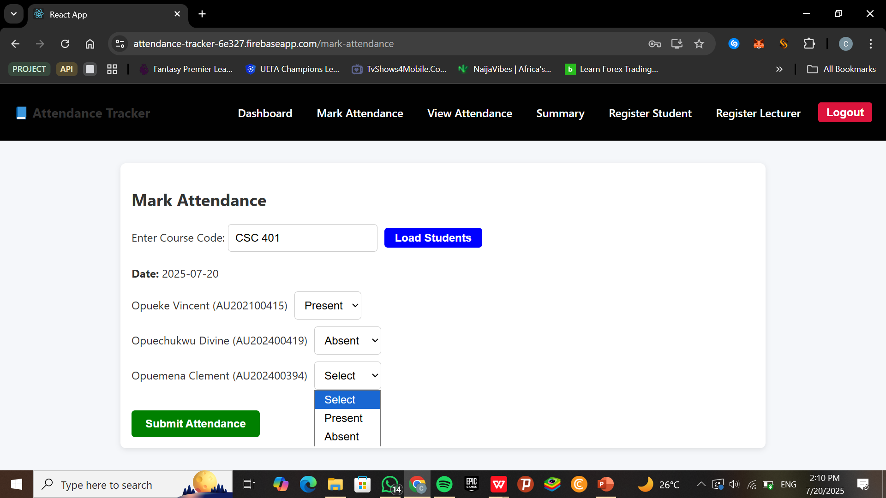

ProTrader Edge
An institutional trading education platform built around structured learning paths, risk governance, and disciplined decision-making.
Next.js, React, TypeScript, CSS View ProjectHere are some of the projects I've worked on:

A React and Firebase app that allows university lecturers to track and manage student attendance records.
React, Firebase, CSSAn institutional trading education platform built around structured learning paths, risk governance, and disciplined decision-making.
Next.js, React, TypeScript, CSS View ProjectA vibrant e-commerce experience for discovering and shopping beautiful Ankara fabrics across curated collections.
React, JavaScript, CSS, Vercel View Project